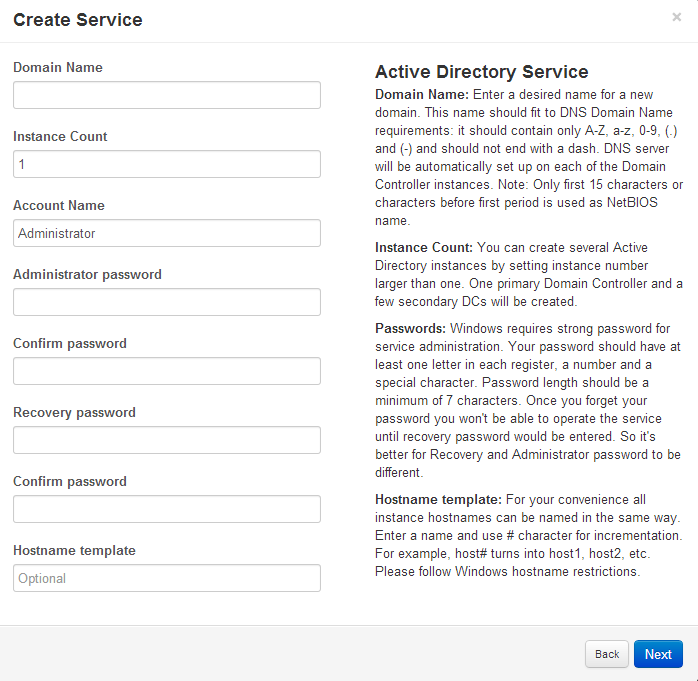

After you picked the Active Directory service in service creation wizard you'll see the following form:
|  |
Enter or select values for this fields:
|
Domain name |
Enter a desired name for a new domain. This name should fit to DNS Domain Name requirements: it should contain only A-Z, a-z, 0-9, (.) and (-) and should not end with a dash. DNS server will be automatically set up on each of the Domain Controller instances. Period characters are allowed only when they are used to delimit the components of domain style names. Single-level domain is not appropriate. Note: Only first 15 characters or characters before first period is used as NetBIOS name. |
Instance Count |
You can create several Active Directory instances by setting instance number larger than one. One primary Domain Controller and a few secondary DCs will be created. |
Account Name |
You account will have Active Directory administrator rights. So initial value is "Administrator" but you can change it to any name you like. |
Administrator password |
Windows requires strong password for service administration. Your password should have at least one letter in each register, a number and a special character. Password length should be a minimum of 7 characters. Once you forget your password you won't be able to operate the service until recovery password would be entered. So it's better for Recovery and Administrator password to be different. |
Confirm password |
Password confirmation is required. |
Recovery password |
Restrictions are the same as for the Administrator password. Please provide password that is different from Administrator. It's not required for form validation though. |
Confirm password |
Password confirmation is required. |